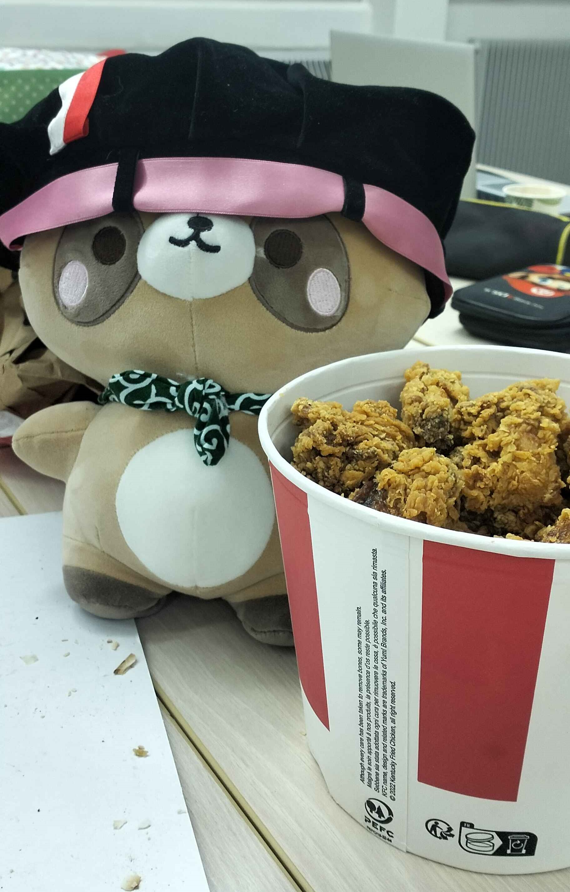

Réalisateur : Hideo Kojima
HTML : Léo Lienhard, Yann Stoll-Geyer
CSS : Léo Lienhard, Yann Stoll-Geyer
JavaScript : Abel Gomes
Dessin : Capucine Dausse
Captcha : Capucine Dausse
Production : :(){:|:&};:
Remerciment spécial aux Responsables soutient mental
Krof et le Bucket de Hot-Wings
CONTACTS
Léo Lienhard : poumleoboy@gmail.com
Abel Gomes : abel.gomes@etu.unistra.fr
Capucine Dausse : capucine.dausse@etu.unistra.fr